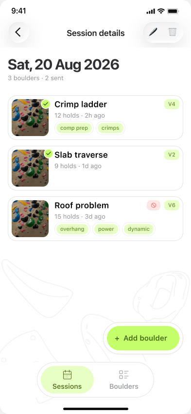
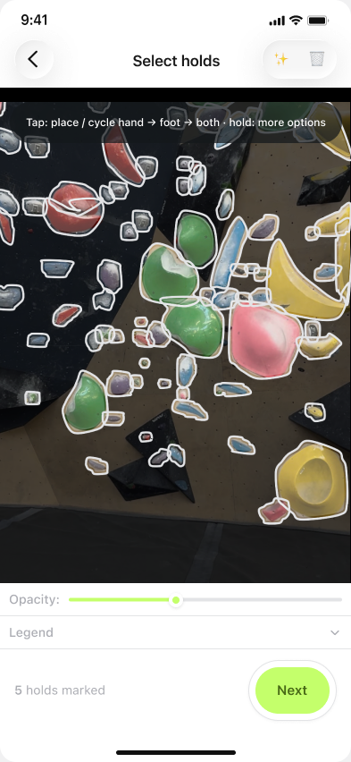
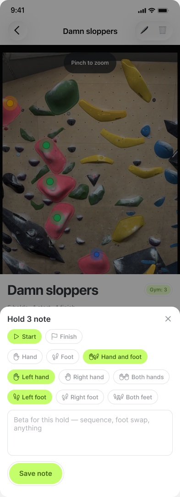
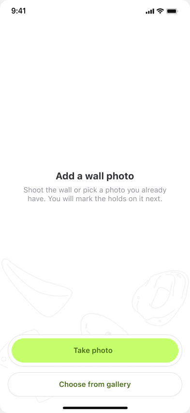
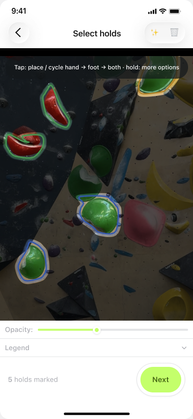
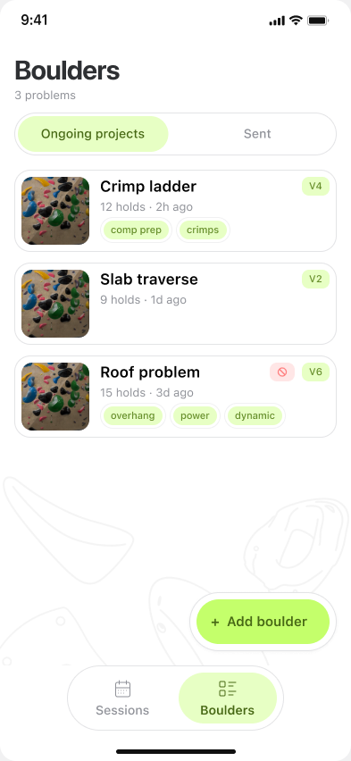
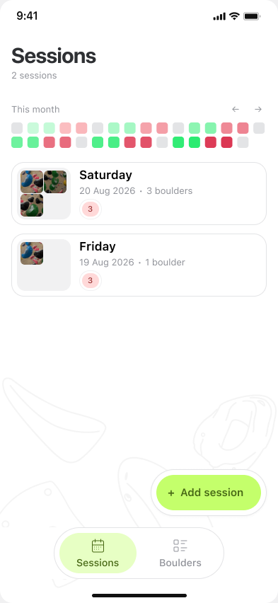

Snap a photo of the wall and Grippy outlines every hold for you. Save beta, grade the problem, and keep every session logged — solo or with your squad.




Shoot the wall or pick a photo you already have. No calibration, no special gear — just point and shoot.

Grippy's built-in hold detector outlines every hold on the photo automatically. Missed one? Fix it with a tap.

Grade in V-scale, Font, or gym grades. Tag by style, add beta per hold, and filter to find what you're working on.

Group boulders by session — solo or with your climbing squad — and see your month at a glance, streak included.
Outlines every hold on your wall photo automatically — hand, foot, start, finish. Adjust anything by hand.
Group boulders by session — solo or with your climbing section — and see a month at a glance, colour-coded by how it went.
Your climbs sync to your account, so a new phone or a reinstall never means starting from zero.
Grade in V-scale, Font, or gym grades, tag problems by style, and filter your list to find what you're working on.
We're finishing up before submitting to the App Store. Check back soon, or reach out at dawid@plaind.pl.